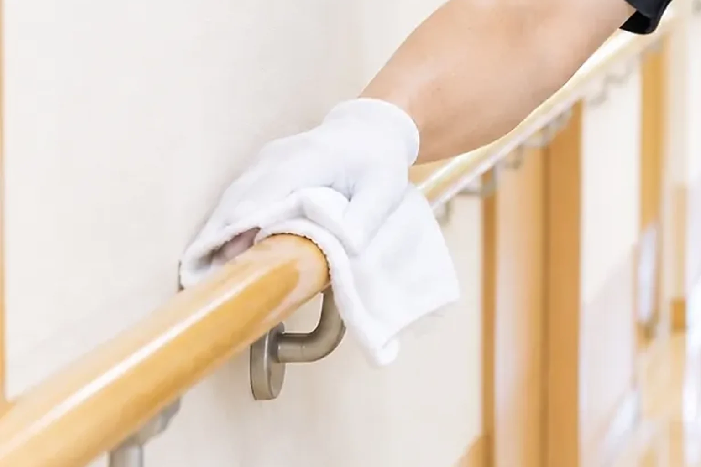

CLEAN CARE JOURNAL / LOTUS のこと
映像の会社が、なぜ掃除を引き受けるのか。

順番は、逆です
LOTUS はイベントの映像・技術の会社として知られています。けれど代表は、もともと清掃の人間です。清掃業界大手で社員として現場に立ち、その後は外部顧問として、仕組みの側から現場を見てきました。作業の基準や道具の選び方は、その時間が決めています。
「掃除を、おろそかにしない」
禅寺では、掃除を「作務(さむ)」と呼び、修行の一つとして大切にしてきました。宗派や信仰の話ではなく、場所を整えることで、そこで過ごす人の一日を整える、という心構えとして。道具は元の場所へ。音は立てない。終わったら、人に報告する。私たちの清掃の手順は、この三つから組み立てています。
映像の現場で身についたこと
イベントの現場では、進行表に書かれた時刻に、機材も人も間に合わせることが仕事の前提です。開場前の早朝、終演後の深夜の撤去も日常です。機材ごとに手順書を書き、止める条件と完了の目安を決めてから動きます。
この習慣は、清掃でもそのまま役に立ちます。「12 時の食事までに終える」を約束として扱う。音の出る作業は時間帯を相談して決める。作業前後を写真で残し、報告して終わる。
今日の持ち帰り
清掃を頼むときに確かめたいのは、仕上がりの写真だけではありません。いつ、どの順番で、何を止めて作業するのか。その段取りを先に見せてもらえるかどうかです。LOTUS では、最初のご相談でその段取りからお出しします。